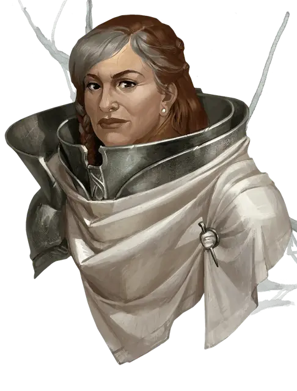

Лиара Портир
Liara Portyr
Средний Гуманоид (Человек), законно-злой, именной НИП

Класс Доспеха 15 (проклёпанная кожа, щит)
Хиты 84 (13к8 + 26)
Скорость 30 футов
| мод | спас | ||
|---|---|---|---|
| СИЛ | 16 | +3 | +3 |
| ЛОВ | 12 | +1 | +1 |
| ТЕЛ | 15 | +2 | +4 |
| мод | спас | ||
|---|---|---|---|
| ИНТ | 14 | +2 | +2 |
| МДР | 14 | +2 | +4 |
| ХАР | 16 | +3 | +3 |
Навыки Атлетика +5, Запугивание +5, Обман +5, Проницательность +4
Чувства пассивное Восприятие 12
Языки Общий, Дварфийский, Драконий
Опасность 4 (1100 опыта)
Бонус мастерства +2
Особенности
Пламенная ярость. Один раз за ход, попав по существу рукопашным оружием, Лиара может извергнуть из оружия магическое пламя и дополнительно нанести цели 10 (3к6) урона огнём.
Храбрый. Лиара совершает с преимуществом спасброски от испуга.
Персонализация Лиары Портир.
Идеал. «Нужно соблюдать субординацию. Вы либо следуете моим приказам, либо умираете».
Привязанность. «Я поклялась хранить и защищать Форт Белуриан во имя великого герцога Ульдера Равенгара из Врат Балдура. Пока я на посту форт не падёт»!
Слабость. «Этот мир прогнил насквозь. У меня нет жалости к тем, кто не может защитить себя».
Действия
Мультиатака. Лиара совершает три рукопашные атаки.
Боевой топор. Рукопашная атака оружием: +5 к попаданию, досягаемость 5 футов, одна цель. Попадание: 7 (1к8 + 3) рубящего урона, или 8 (1к10 + 3) при ударе двумя руками.
Тяжёлый арбалет. Дальнобойная атака оружием: +3 к попаданию, дистанция 100/400 фт., одна цель. Попадание: 6 (1к10 + 1) колющего урона.
Описание
Как командир Форта Белуриан, Лиара проводит большую часть своего времени, беспокоясь о безопасности своей крепости, во время сделок с пиратами. В общем, у неё нет проблем с авантюристами, и она сделает все возможное, чтобы помочь им справиться со множеством угроз, скрывающихся в джунглях.
Лиара родом из влиятельной семьи в Врат Балдура и занимает пост этот в течение последних трёх лет. Для неё это назначение похоже на тест, но многие из её подчинённых в Форте Белуриан чувствует себя как изгнанники. Шпионы Лиары в Порту Нянзару снабжают её манифестами кораблей и графиками отплытия, которые она передаёт пиратам якорной стоянки Джахака в обмен на обещания никогда не атаковать корабли, плавающие под флагом Врат Балдура. Лиара также получает некую часть прибыли от пиратов, которая направлены на то, чтобы сохранитьё гарнизон.